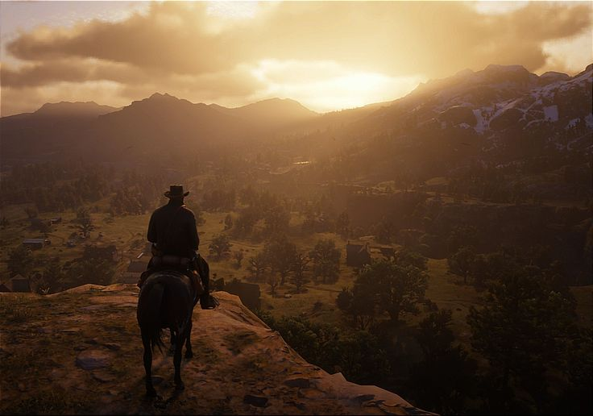
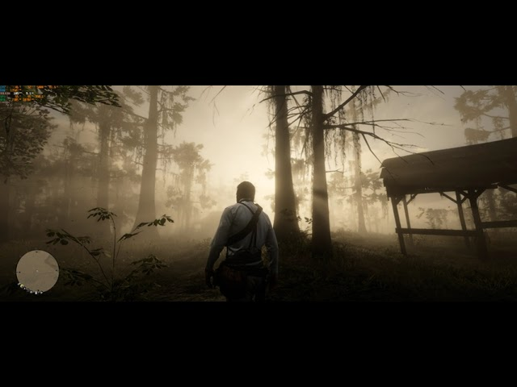
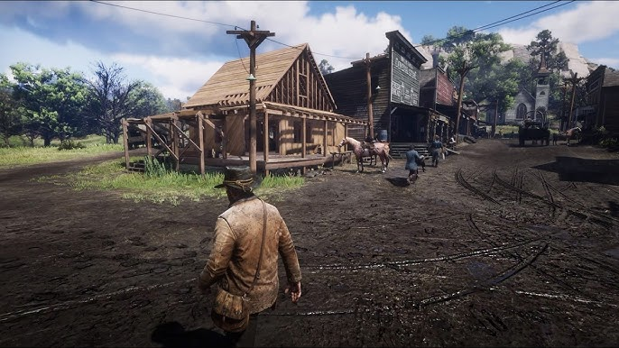
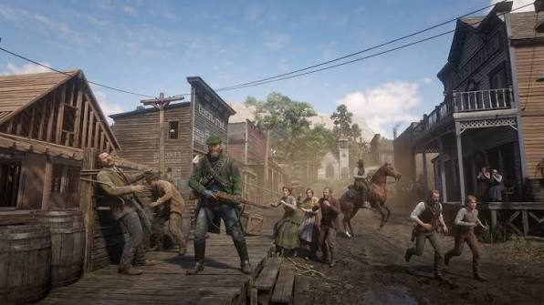
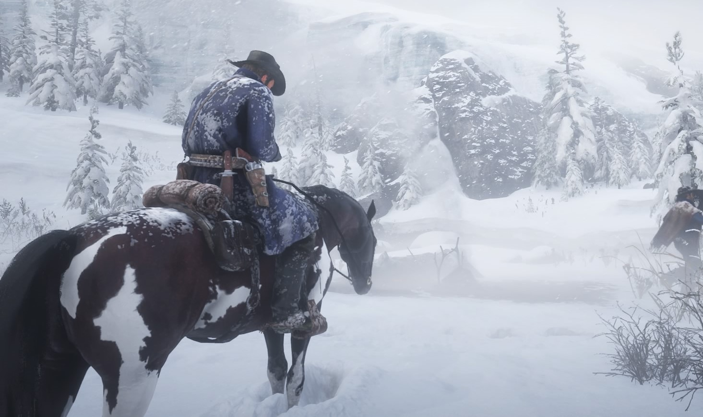
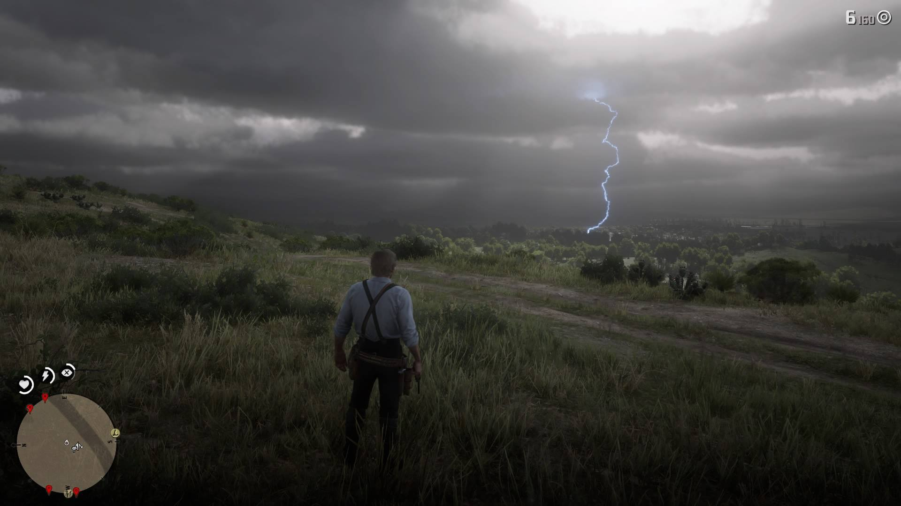

img/rdr2/hero.jpgSome games are impressive. Red Dead Redemption 2 is something else: a technical statement of intent that redraws the line for what a real-time simulated world can be. Released in 2018 after roughly eight years and a reported budget north of many blockbuster films, it is less a game built to be played than a world built to exist, which you happen to be allowed to move through. Nearly a decade later, engineers still study it, and very little has caught up. This is a review of how it was built, and why the engineering still matters.
I want to be precise about the claim. RDR2 is not the prettiest game ever made in the narrow sense of raw resolution or triangle counts. What makes it singular is systemic density: the sheer number of interacting simulations running at once, each one deep, all of them convincing, none of them contradicting the others. That is a far harder problem than a pretty screenshot, and it is where the technical achievement lives.
The Engine: RAGE, Pushed to Its Limit
RDR2 runs on RAGE, the Rockstar Advanced Game Engine, the same lineage that powered Grand Theft Auto V, extended and rebuilt for an open world of a different character. Where GTA V's engineering triumph was a dense vertical city, RDR2's is a vast, sparse, natural wilderness, which is a fundamentally different rendering and streaming problem. Cities hide their draw distance behind buildings; a mountain range has nowhere to hide. RAGE here had to hold enormous view distances, volumetric skies, and dense organic geometry in memory and on screen simultaneously, streaming the world continuously with no loading screens from the snow-capped Grizzlies in the north to the swamps of Lemoyne in the south.
The engine is a tightly integrated stack: a deferred renderer, a bespoke physics and animation layer built around NaturalMotion's Euphoria, a proprietary audio engine, and a streaming system that decides, thousands of times a second, what to load, what to render at full fidelity, and what to quietly reduce. Understanding RDR2 means understanding how these layers cooperate, because the magic is never one system - it is all of them agreeing.
Rendering and Lighting

img/rdr2/lighting.jpgThe lighting is the single biggest reason RDR2 reads as photographic. Rockstar built a physically-based rendering pipeline paired with a volumetric atmosphere system that simulates how light actually scatters through air, fog, dust, and cloud. This is why sunrise light in RDR2 does not look painted on: the sun is a real light source refracting through a genuinely volumetric sky, so god-rays fall through trees, fog banks catch and diffuse light, and the horizon glows because the atmosphere between you and it is being simulated, not faked with a gradient.
Several systems compound to sell it. A dynamic global-illumination approximation bounces light so shadowed areas are lit by the color of their surroundings rather than going flatly dark, the way real ambient light behaves. Screen-space and volumetric techniques handle the fine occlusion in crevices and under brims of hats. The clouds are volumetric rather than a skybox texture, so they have depth, drift, and internally scatter light, which is why a gathering storm looks three-dimensional. And the whole thing is graded through a filmic tone-mapping and a subtle post stack that gives the image its characteristic warm, slightly desaturated, cinematic quality.
The trade-off Rockstar accepted was temporal anti-aliasing. RDR2 leans hard on TAA to resolve its dense foliage and fine detail without shimmering, and on consoles that meant a softer image than some players wanted. It is a defensible engineering choice - without aggressive temporal resolve, a world this geometrically busy would crawl with aliasing - but it is the honest cost of the density elsewhere.
World Detail and Density

img/rdr2/detail.jpgThis is where the famous stories live, and most of them are true. The world is authored and simulated at a level of granularity that borders on the obsessive. Snow deforms under boots and hooves and fills back in. Mud clings to and gradually flakes off boots and horse legs. Meat rots visibly over in-game time. Animals field-dress with anatomically distinct results. Guns tarnish without cleaning and their metal catches light differently as they do. None of these are cutscenes; they are persistent states of a live simulation.
Underpinning the density is an aggressive level-of-detail and streaming system. The engine maintains many LOD tiers for geometry, textures, shadows, and even NPC behavior, continuously dialing fidelity up close to the camera and down in the distance so the memory and compute budgets are spent where your eyes are. The foliage system places and renders an extraordinary quantity of grass, trees, and undergrowth with wind simulation running across it, again resolved through temporal techniques so it holds together in motion. The result is a wilderness that feels grown rather than placed.
Euphoria: Animation as Physics
If lighting is why RDR2 looks real, Euphoria is why it moves real. Most games animate characters by playing back pre-recorded clips. RDR2 blends that traditional, heavily motion-captured animation with NaturalMotion's Euphoria, a system that simulates the body's musculature and balance in real time, so characters react to forces procedurally instead of snapping to a canned response.
The consequences are everywhere once you notice them. A shot enemy does not play "death animation #4"; the physics of where the bullet hit propagates through a simulated body that tries to keep its balance, stumbles, reaches for the wound, and collapses differently every time. Arthur braces against a slope, adjusts his footing on uneven ground, and shifts his weight when he stops. NPCs shoved in a saloon catch themselves against a table. Because the reactions are computed rather than replayed, they are never identical and never quite wrong, which is exactly what defeats the uncanny stiffness of scripted animation.
Layered on top is one of the most talked-about deliberate design choices in the game: contextual, weighty animation. Arthur's movement is built from an enormous set of blended clips covering direction, speed, terrain, stance, and held items, and the engine prioritizes animation fidelity and physical plausibility over instant responsiveness. This is the source of the "the controls feel heavy" debate, and it is worth being clear-eyed about it as an engineering decision, not an accident.
The Cost of Realism: Input and Weight
RDR2 intentionally trades a measure of input immediacy for animation realism. When you push the stick, Arthur does not teleport into a run; he transitions through the physically plausible in-between poses, which introduces a few frames of latency and a sense of momentum and mass. To an action-game reflex, that reads as sluggish. To the game's own goals, it reads as a heavy man in a heavy world, and it is the deliberate other side of the coin that gives the animation its grounded weight.
Whether you love it or not, it is a coherent choice: you cannot have animation this physically continuous and also have twitch-instant response, because the two are in direct tension. Rockstar chose continuity. It is the single most divisive technical decision in the game, and understanding why it feels the way it does - momentum-preserving animation blending - turns a common complaint into an appreciation of the constraint.
The Living World: NPC AI and Ecology

img/rdr2/npc.jpgThe NPCs are where the simulation becomes a world. They are not idle set dressing; a great many run daily schedules, moving between home, work, saloon, and bed on a clock. More impressively, they carry a short-term memory of the player. Insult someone and they hold a grudge and may recognize you days later. Greet the same person repeatedly and the dialogue acknowledges it. Commit a crime with a witness and they flee to report you, and whether they succeed changes the outcome, which turns law enforcement into an emergent consequence rather than a scripted trigger.
The reactive-dialogue system deserves its own mention. Arthur can greet, antagonize, or defuse almost any NPC, and they respond with context-aware, individually voiced lines that account for who you are, what you are wearing, whether you are bloodied, and your recent history. The sheer volume of recorded, conditionally triggered dialogue is a production feat as much as a technical one, but the system that selects the right line from that library in real time is pure engineering.
Then there is the wildlife. Around two hundred species populate the world with their own AI - predator and prey behaviors, flocking and herding, fleeing, hunting, feeding, and reacting to the player, weather, and time of day. Deer spook and bolt, wolves hunt in coordinated packs, birds startle from trees as you pass, and the ecosystem carries on whether or not you are watching. It is one of the most complete real-time animal simulations ever shipped.
The Horse: A Simulation Showpiece

img/rdr2/horse.jpgNo review of RDR2's technology is complete without the horse, which is quietly one of the most sophisticated single systems in the game. It is simulated as an animal, not a vehicle. Its gait blends realistically across walk, trot, canter, and gallop with proper footfall patterns and momentum. Its musculature is modeled and animated, and in cold weather physical details respond to the environment. It has stamina and temperament, bonds with the player over time through care and handling, and behaves differently by breed. It even leaves droppings. The horse alone contains more genuine simulation than the entirety of many games, and it is treated as a companion the systems take as seriously as Arthur himself.
Weather and Environmental Simulation

img/rdr2/weather.jpgWeather in RDR2 is a driver of other systems rather than a cosmetic layer. Rain visibly wets surfaces, changes their specular response, and pools; it turns dirt roads to mud that then affects movement. Snow accumulates and deforms. Fog and storms change visibility, which changes both the lighting and the AI's behavior. Wind moves the vast foliage and carries through the audio. Lightning genuinely illuminates the scene as a dynamic light. Because weather feeds the lighting, the terrain, the animals, and the NPCs all at once, a passing storm is felt across the whole simulation, not just seen.
Audio Engineering
The audio is easy to overlook and technically world-class. RDR2 uses a dynamic, adaptive musical score that responds to the state of play - tension, pursuit, calm, mission beats - by layering and recombining stems rather than switching tracks, so the music breathes with the moment without obvious seams. The positional audio models how sound propagates and reflects across the terrain, so a distant gunshot echoes appropriately off canyon walls and a voice carries differently indoors and out. And the foley density mirrors the visual density: distinct footsteps per surface, gear and holster movement, the creak of a saddle, the specific report of each weapon, and an environmental bed of wind, water, insects, and wildlife that shifts by region and time of day. It is a soundscape simulated with the same seriousness as the image.
The PC Release and Technical Delivery
The 2019 PC version raised the ceiling further with higher resolutions, uncapped frame rates, extended draw distances, and finer settings, and it added API options over the game's life. Its launch was rocky, as ambitious PC ports often are, but once stabilized it became the definitive way to see what the engine could do, and it made plain how much headroom the original console versions were quietly managing. The console versions remain a masterclass in optimization precisely because they delivered this simulation within a fixed, modest hardware budget.
What It Cost, and What It Means
It is worth naming the human reality behind the achievement: reporting around the game's development described extended crunch, and the technical marvel should not be discussed as if it were free of that cost. The polish visible in every system was paid for in part by people's time and strain, and a serious appreciation of the engineering holds both truths at once - the work is extraordinary, and the way such work is often produced deserves scrutiny.
As a piece of technology, RDR2's importance is that it reframed the target. It argued that the frontier of game graphics is not resolution or raw fidelity but believable systemic depth - the number of honest simulations you can run at once without any of them breaking the others. Almost no game since has matched the completeness, and studying it is really studying a thesis about where realism actually comes from: not from any single showpiece, but from a hundred quiet systems all telling the same coherent lie convincingly.
Landmark / a generational technical benchmark
Red Dead Redemption 2 is not the easiest game to control or the sharpest image on a screen, and it does not try to be. It is the most complete real-time world yet simulated, and its deliberate trades - weight over immediacy, systemic depth over spectacle - are the reason it still has no true peer. As an artifact of engineering ambition, it remains the high-water mark.
Conclusion
What stays with you about RDR2 is not a single moment but a texture: the accumulated weight of countless systems agreeing. The light, the animation, the animals, the weather, the horse, the NPC who remembers your face - individually impressive, collectively unprecedented. It is the clearest proof we have that immersion is an emergent property of many deep simulations running in harmony, and it set a standard that, years on, the industry is still reaching toward. For anyone who cares about how virtual worlds are actually built, it remains essential study.